第11章 醛和酮
本章核心思路：醛酮的灵魂是 羰基 C=O。C 部分正电（亲电），O 部分负电（亲核/能被质子化），α-H 因羰基拉电子而有酸性。三条主线：① 羰基碳的亲核加成；② α-H 的烯醇/烯醇负离子化学；③ 羰基的氧化还原。把每个反应归到这三条线，就不会乱。
🔥 考前 30 秒速查（必背）
| 类型 | 规律 |
|---|
| 亲核加成活性 | HCHO > RCHO > R₂CO > 大位阻酮（电子 + 位阻一致） |
| 羟醛缩合（有 α-H） | 稀碱低温 → β-羟基醛酮；浓碱/Δ → 脱水 → α,β-不饱和醛酮 |
| Cannizzaro（无 α-H） | HCHO / PhCHO + 浓强碱 → 歧化（醇 + 羧酸盐） |
| 碘仿黄沉 CHI₃ | CH₃CO– 或 CH₃CH(OH)– 结构（甲基酮 / 乙醛 / 乙醇 / 2-醇） |
| 缩醛 / 缩酮 | 2 ROH / 干 HCl，可逆，保护羰基（稀酸水解还原） |
| Wittig | Ph₃P=CHR + 醛酮 → 烯（定向 C=C）+ Ph₃P=O |
| NaBH₄ vs LiAlH₄ | NaBH₄ 只还原醛酮；LiAlH₄ 强，连酸/酯一起还原 → 醇 |
| C=O → CH₂ | Clemmensen（Zn-Hg/HCl，耐酸）｜Wolff-Kishner（NH₂NH₂/KOH/Δ，耐碱） |
| 鉴别三件套 | 2,4-DNP（验羰基）/ Tollens 银镜（验醛）/ 碘仿（验甲基酮） |
| Tollens vs Fehling | Tollens 脂肪+芳醛都灵；Fehling 只对脂肪醛（芳醛阴性） |
教材依据：本页按沈增明《有机化学》（第三版，SJTU 自编）醛酮章组织；反应条件与产物已对照标准有机化学核对。⚠️ 醛酮章无独立真题卷，碘仿底物范围 / Cannizzaro 适用 / 缩醛保护等细节，考前请再用教材核对一遍措辞。波谱内容本页不做。
核心知识点
11.1 命名 (Nomenclature)
醛的命名
- 选含 —CHO 的最长碳链为主链，词尾用 -醛 (-al)；醛基碳永远是 C1（不必标位次）。
- 例：CH₃CH₂CHO = 丙醛 (propanal)；CH₃CH=CHCHO = 2-丁烯醛 (but-2-enal，巴豆醛/巴豆醛)。
- 常用俗名：甲醛 HCHO (formaldehyde)、乙醛 CH₃CHO (acetaldehyde)、苯甲醛 PhCHO (benzaldehyde)、肉桂醛 PhCH=CHCHO (cinnamaldehyde)。
酮的命名
- 选含 C=O 的最长链为主链，词尾用 -酮 (-one)，编号让羰基位次最小。
- 例：CH₃COCH₂CH₃ = 丁-2-酮 (butan-2-one)；CH₃COCH₃ = 丙酮 (propanone/acetone)。
- 芳酮：PhCOCH₃ = 苯乙酮 (acetophenone)；PhCOPh = 二苯甲酮 (benzophenone)。
- 含两个官能团时优先级：羧酸 > 酯 > 酰胺 > 醛 > 酮 > 醇 > 胺。醛比酮优先（同时有醛酮时，醛为后缀、酮作"氧代 (oxo-)"取代基）。
易错：醛基 C1 不写位次（"丁醛"不写"丁-1-醛"）；酮一定要写位次（"戊-2-酮"≠"戊-3-酮"）。
11.2 羰基结构 + 亲核加成活性顺序
羰基 C=O 的极性
C=O 中 O 电负性大 → 电子偏向 O：C 带 δ⁺（亲电中心，挨亲核试剂打）、O 带 δ⁻（亲核 / 可被质子化）。共振式 C=O ↔ C⁺–O⁻ 描述了这点。所以醛酮的两类进攻方式：亲核试剂打 C、亲电试剂（H⁺）抓 O。
亲核加成活性顺序（电子 + 位阻一致）
HCHO > RCHO > R₂CO > 大位阻酮
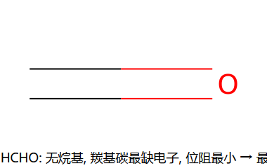
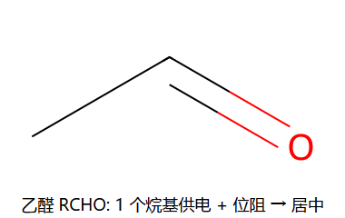
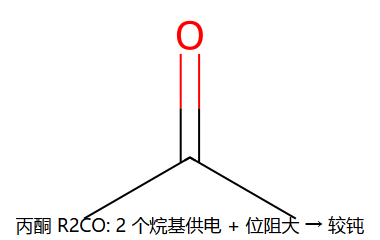
- 电子效应：烷基 +I 推电子，部分中和羰基碳的 δ⁺ → 烷基越多，C 越"不缺电子"，越不易被亲核进攻。
- 位阻效应：烷基越多越大，亲核试剂越难接近羰基碳。
- 两效应方向一致 → 甲醛（0 烷基）最活泼，酮（2 烷基）较钝。芳醛因苯环共轭分散羰基，比脂肪醛略钝。
口诀：烷基越多 → 越不活泼（既挡路又喂电子）。这个顺序同时决定了 HCN/NaHSO₃/Grignard 等所有亲核加成的难易，以及谁能/不能做 NaHSO₃ 加成。
主线 ① 亲核加成（羰基碳被进攻）
11.3 亲核加成反应（六类）
统一机理骨架：亲核试剂 Nu⁻ 进攻羰基碳 → 四面体烷氧负离子 → 质子化得加成产物。酸催化时先质子化 O 活化羰基，再让中性 Nu 进攻。
① 与 HCN — α-羟基腈（氰醇，增 1 C）
机理 2 步
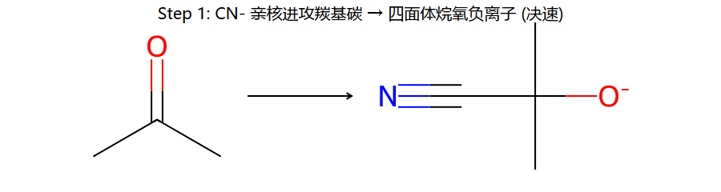
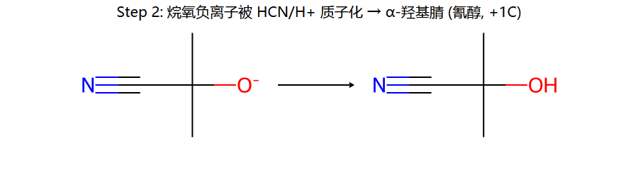
Step 1：CN⁻（强亲核体）从羰基平面上下进攻 C → 四面体烷氧负离子（决速步）。
Step 2：烷氧负离子被 HCN/H⁺ 质子化 → α-羟基腈（氰醇）。
用途：① 给碳链增 1 个 C（–CN）；② –CN 可水解成 –COOH（得 α-羟基酸）或还原成 –CH₂NH₂。
催化条件：需微量碱提供 CN⁻（纯 HCN 解离弱、太慢；强酸又把 CN⁻ 质子化掉）。常用 KCN + 微量酸调 pH。
② 与 NaHSO₃ — α-羟基磺酸钠（白色结晶，鉴别）
醛 / 甲基酮 + 饱和 NaHSO₃ → 白色结晶析出
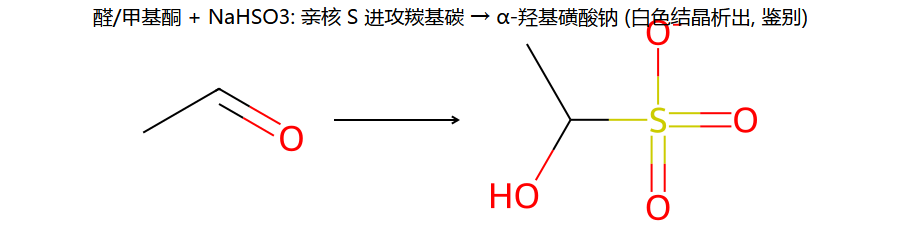
亲核的 S 进攻羰基碳 → α-羟基磺酸钠（加成物难溶，结晶析出）。
选择性 = 鉴别价值：只有醛和位阻小的甲基酮（CH₃CO–）能反应（位阻大的酮不行）→ 可用来鉴别醛/甲基酮，也用于提纯（加成结晶分离后，稀酸或稀碱即可逆回羰基）。
③ 与 Grignard 试剂 RMgX — 增碳成醇
R⁻ 进攻羰基碳 → 烷氧镁 → 水解成醇
| 羰基底物 | 产物 | 增碳 |
|---|
| 甲醛 HCHO | 1° 醇 | RMgX 的 R 直接接 CH₂OH |
| 其他醛 RCHO | 2° 醇 | — |
| 酮 R₂CO | 3° 醇 | — |
| CO₂ | 羧酸（+1 C） | 见 ch9 Grignard |
| 环氧乙烷 | 1° 醇（+2 C） | 见 ch10 环氧开环 |
这是逆推合成醇的主力：看到目标醇，就在 C–OH 的某根 C–C 键处"断"，一边做 RMgX、一边做羰基。
陷阱：Grignard 遇活泼 H（–OH / –NH / –COOH / 端炔 ≡C–H）会被当场质子化失活（变回 RH）。底物含这些基团时要先保护。
④ 与醇 ROH — 缩醛 / 缩酮（保护羰基）
机理 4 步（酸催化，半缩醛 → 缩醛）
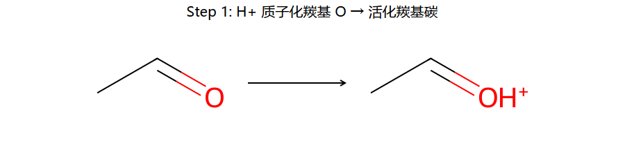
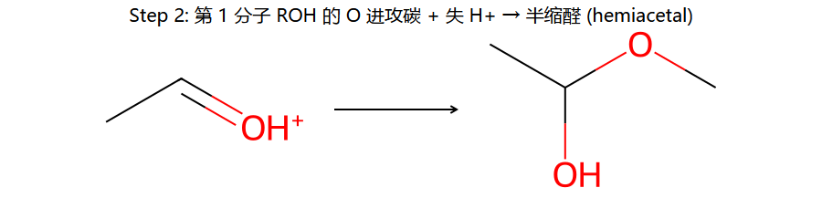
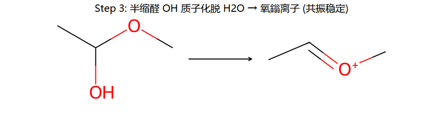
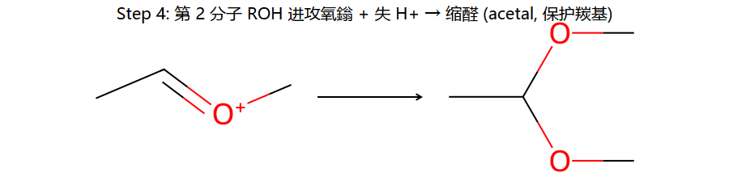
- 质子化羰基 O → 羰基碳更缺电子（活化）。
- 第 1 分子 ROH 的 O 进攻碳 + 失 H⁺ → 半缩醛 (hemiacetal)（一个 OH + 一个 OR 在同一碳）。
- 半缩醛的 OH 质子化 → 脱 H₂O 生成氧鎓离子（C=O⁺R，共振稳定）。
- 第 2 分子 ROH 进攻氧鎓 + 失 H⁺ → 缩醛 (acetal)（一个碳上两个 OR）。
缩醛是"保护基"：缩醛在碱/亲核/还原条件下惰性，但稀酸 + 水可定量水解还原回羰基。所以遇到"分子里有羰基又有别处要做 Grignard/还原"的合成题——先把羰基做成缩醛（常用乙二醇 → 1,3-二氧戊环环状缩醛），保护好，做完别处反应再稀酸脱保护。
全程可逆：成缩醛需无水 + 除水（推平衡向右）；脱保护用稀酸 + 大量水（推平衡向左）。这是"水位"控制的经典案例。
⑤ Wittig 反应 — 定向成烯
叶立德 (ylide) + 醛酮 → 烯 + Ph₃P=O
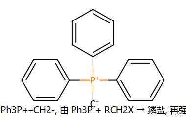
叶立德怎么来：Ph₃P + R–CH₂–X →（SN2）→ 鏻盐 [Ph₃P–CH₂R]⁺X⁻ → 强碱（如 BuLi）拔走 α-H → 叶立德 Ph₃P⁺–CH⁻R（≡ Ph₃P=CHR）。
机理 2 步（连环图）
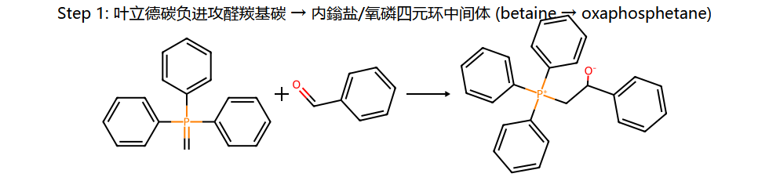
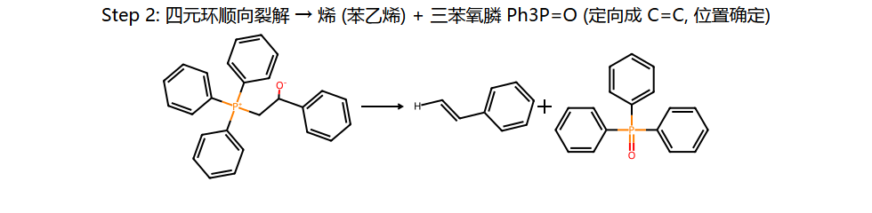
Step 1：叶立德的碳负进攻醛酮羰基碳 → 经内鎓盐（betaine）/ 氧磷四元环（oxaphosphetane）中间体。
Step 2：四元环顺向裂解，P–O 强键的形成（Ph₃P=O）是驱动力 → 把 C=O 换成 C=C。
为什么爱用 Wittig：双键位置完全确定（就在原羰基碳处），不像醇脱水那样可能给混合烯、也不重排。是定向造碳碳双键的标准方法。
例：苯甲醛 + Ph₃P=CH₂ → 苯乙烯 PhCH=CH₂ + Ph₃P=O。要造 R₂C=CHR'，把"=CHR'"放进叶立德、"R₂C="留在羰基即可。
⑥ 与含氮亲核体 — 肟 / 腙 / 缩氨脲（鉴别）
羰基 + H₂N–G → C=N–G + H₂O（加成 - 消除）
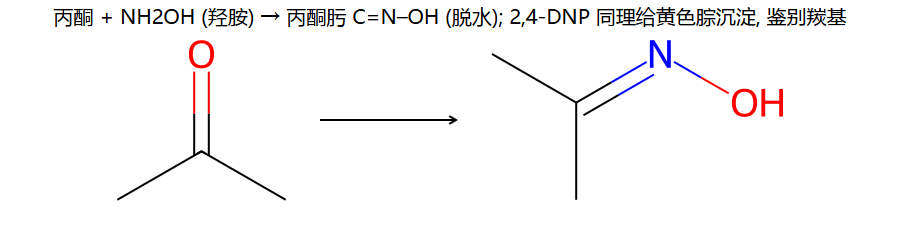
| 试剂 H₂N–G | 产物 | 用途 |
|---|
| 羟胺 NH₂OH | 肟 (oxime) C=N–OH | 结构鉴定；肟可 Beckmann 重排（了解） |
| 肼 NH₂NH₂ | 腙 (hydrazone) C=N–NH₂ | Wolff-Kishner 还原中间体 |
| 2,4-二硝基苯肼 (2,4-DNP) | 2,4-二硝基苯腙 | 黄/橙红色沉淀 → 验羰基 |
| 氨基脲 H₂N–CO–NHNH₂ | 缩氨脲 (semicarbazone) | 结晶鉴定 |
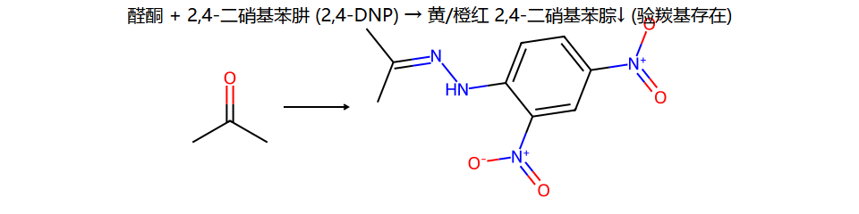
2,4-DNP（布拉迪试剂）：醛和酮都给黄→橙红色沉淀，是"这分子里有没有羰基"的总开关式鉴别（不区分醛酮，区分醛酮再用 Tollens / 碘仿）。
主线 ② α-H 反应（烯醇 / 烯醇负离子化学）
11.4 α-H 的反应
羰基的 α-H 因 C=O 拉电子而有酸性（拔掉后生成被羰基共振稳定的烯醇负离子）。α-碳因此能当亲核试剂去进攻别的亲电体——这是羟醛、卤仿、Mannich、烯胺的共同根。
① 羟醛缩合 (Aldol) — 稀碱 vs 浓碱
机理（稀碱低温，停在 β-羟基醛）
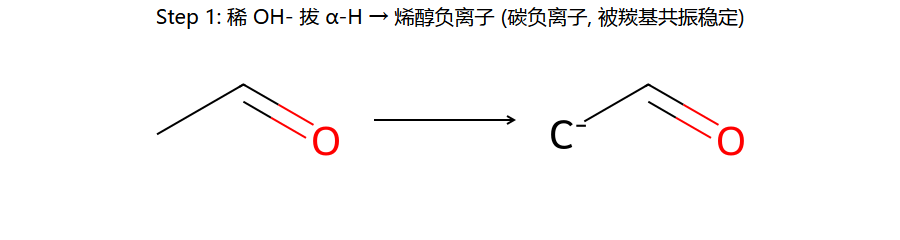
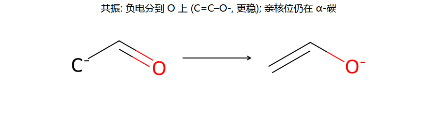
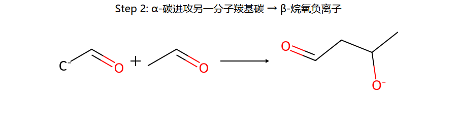
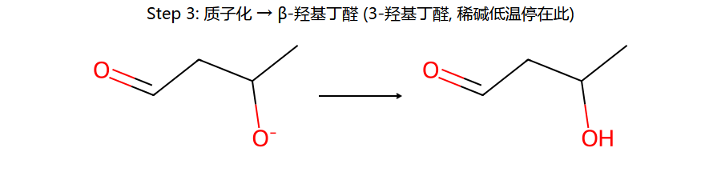
- 稀 OH⁻ 拔 α-H → 烯醇负离子（碳负离子，被羰基共振稳定，负电主要分到 O 上）。
- 烯醇负离子的 α-碳进攻另一分子的羰基碳 → β-烷氧负离子。
- 质子化 → β-羟基醛/酮（"3-羟基丁醛"，稀碱低温停在此）。
浓碱 / 加热 → 脱水 → α,β-不饱和醛酮
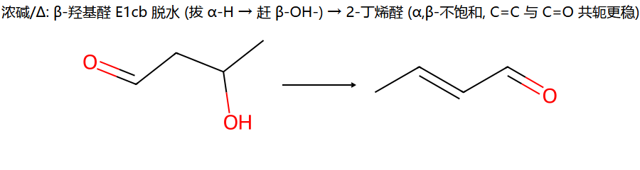
β-羟基醛在浓碱/加热下走 E1cb 消除（先拔 α-H 成碳负离子，再赶走 β-OH⁻）→ α,β-不饱和醛酮。产物里 C=C 与 C=O 共轭，能量大幅降低 → 热力学把产物推到这。
例：2 CH₃CHO ─稀NaOH/低温→ 3-羟基丁醛 ─浓碱/Δ→ 2-丁烯醛（巴豆醛）。
记法：稀碱低温 = "温柔"，只做到加成（β-羟基）；浓碱加热 = "狠"，连水一起脱掉，凑成稳定的共轭烯酮。双键永远在 α,β 之间（与羰基共轭）。
前提：底物必须有 α-H。没有 α-H（HCHO/PhCHO/三甲基乙醛）做不了烯醇负离子，浓碱下走的是
Cannizzaro（见
11.5④）。
② 交叉羟醛 (Crossed Aldol)
关键：一方无 α-H 只当亲电体，一方有 α-H 当亲核体
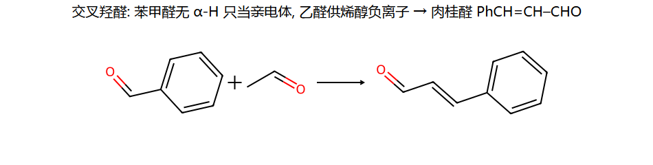
两种都有 α-H 的醛混在一起会给4 种交叉产物（乱）。考试一般限定为：无 α-H 的醛（HCHO、PhCHO）只作羰基亲电体，另一个有 α-H 的供烯醇负离子 → 产物干净。
例：苯甲醛（无 α-H）+ 乙醛（有 α-H）─碱→ 脱水 → 肉桂醛 PhCH=CH–CHO。
判别口诀：交叉羟醛里，谁没有 α-H 谁挨打（当羰基），谁有 α-H 谁出拳（当 α-碳亲核体）。
③ 卤仿 / 碘仿反应 (Haloform)
机理 2 步（甲基酮 + 3 X₂/NaOH → CHX₃↓ + 羧酸盐）
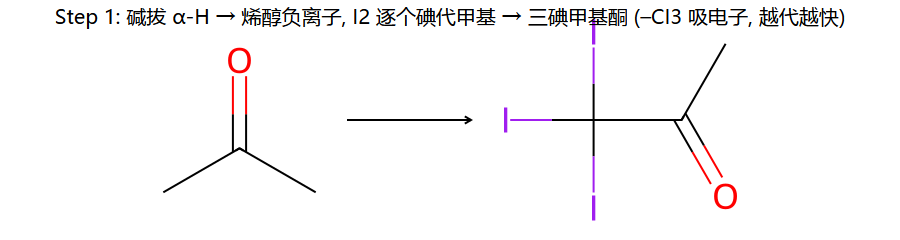
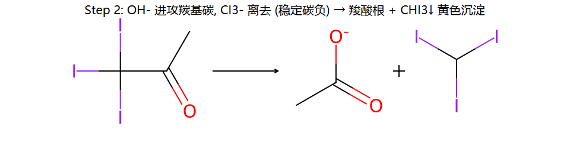
- 碘代：碱拔 α-H 成烯醇负离子，X₂ 逐个卤代甲基。每代一个 X，–C 上吸电子↑ → 剩下 H 更酸 → 越代越快 → 一口气代到 –CX₃。
- 裂解：OH⁻ 进攻羰基碳，CX₃⁻ 作为稳定的离去基离去 → 羧酸根 + CHX₃↓（碘仿为黄色沉淀）。
碘仿（黄沉）鉴别范围——只对含以下结构者阳性：① 甲基酮 CH₃CO–R；② 乙醛 CH₃CHO；③ 能被次碘酸氧化成上述结构的醇：乙醇 CH₃CH₂OH 和 仲醇 CH₃CH(OH)–R（即 2-醇）。
注意：甲醇、其它伯醇、非甲基酮 阴性。"甲基酮"指 CH₃ 直接连在羰基上（乙酰基），不是分子里随便哪个甲基。
④ Mannich 反应 — 造 β-氨基酮
机理：甲醛 + 仲胺 → 亚胺离子；酮烯醇 α-碳进攻它
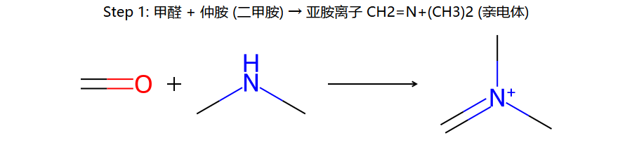
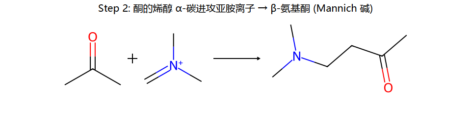
三组分：含 α-H 的酮 + 甲醛（HCHO）+ 仲胺（如二甲胺）。
- HCHO + 仲胺缩合 → 亚胺离子 CH₂=N⁺R₂（亲电体）。
- 酮的烯醇 α-碳进攻亚胺离子 → β-氨基酮（Mannich 碱）。
Mannich 碱受热消除胺 → α,β-不饱和酮（一个间接造烯酮的路子）。
⑤ 烯胺 (Stork) 烷基化 — α-碳定向修饰
机理：酮 + 仲胺 → 烯胺；烯胺 α-碳当亲核体
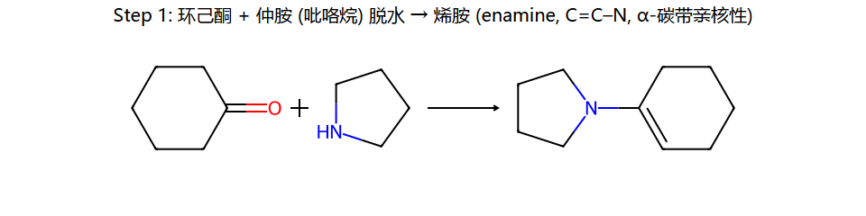
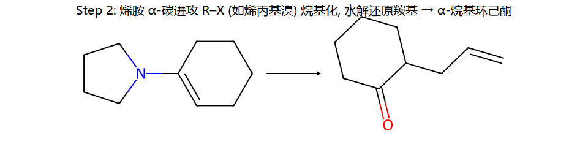
- 酮 + 仲胺（吡咯烷 / 哌啶 / 吗啉）脱水 → 烯胺（enamine, C=C–N）。N 推电子使 β-碳（=原 α-碳）带亲核性。
- 烯胺 α-碳进攻 R–X（烷基化）或酰氯（酰基化），再水解把 C=N 变回 C=O → α-取代的酮。
Stork 烯胺法的价值：直接用强碱拔酮的 α-H 烷基化容易多取代 + 自身羟醛；走烯胺则温和、单取代、选择性好。是"给酮的 α-位精准接一个基团"的经典方法。
主线 ③ 氧化还原
11.5 氧化与还原
① 还原成醇 — NaBH₄ / LiAlH₄
机理：H⁻ 进攻羰基碳 → 烷氧负离子 → 质子化成醇
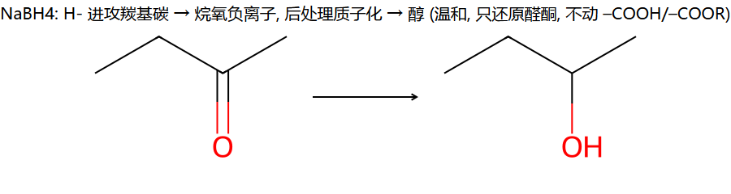
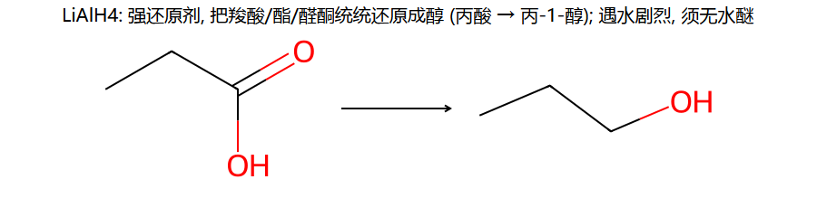
| 还原剂 | 能还原 | 不动 | 条件 |
|---|
| NaBH₄（温和） | 醛、酮 → 醇 | –COOH、–COOR、C=C | 可在醇/水中用（较缓和） |
| LiAlH₄（强） | 醛、酮、羧酸、酯、酰胺、腈 → 醇/胺 | 孤立 C=C | 遇水/质子剧烈反应，须无水醚，后处理再加水 |
选择性记法：分子里同时有酮和酯、只想还原酮 → 用 NaBH₄（酯不动）。要把酯/酸也还原到醇 → 用 LiAlH₄。
催化加氢 H₂/Ni 也能还原 C=O → 醇，但同时会还原 C=C（不选择性）。要保留双键只还羰基 → 用 NaBH₄。
② 羰基彻底还原成 CH₂ — Clemmensen / Wolff-Kishner
C=O → CH₂（不是 → CH–OH，是去掉氧）
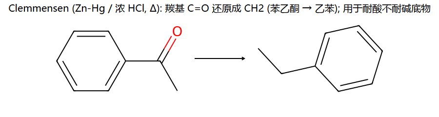
| 方法 | 试剂 | 适用底物 |
|---|
| Clemmensen | Zn-Hg（锌汞齐）/ 浓 HCl，Δ | 耐酸、不耐碱的底物 |
| Wolff-Kishner（黄鸣龙改良） | NH₂NH₂ + KOH/NaOH，高沸醇，Δ | 耐碱、不耐酸的底物 |
Wolff-Kishner 机理 2 步
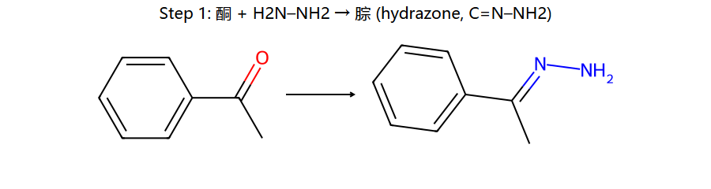
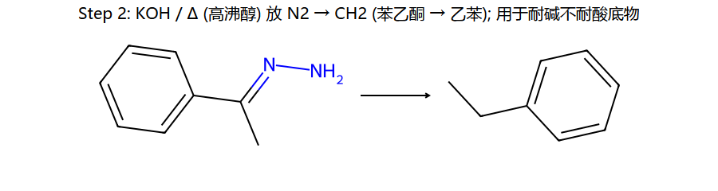
Step 1：酮 + 肼 → 腙 (C=N–NH₂)；Step 2：强碱 / 加热下放出 N₂，C=O 变成 CH₂。
经典用法：Friedel-Crafts 酰基化给芳酮（不重排），再用 Clemmensen/Wolff-Kishner 把 C=O 还原成 CH₂ → 等于在苯环上"安全"接一条直链烷基（避开 F-C 烷基化的碳正离子重排！）。这是 ch7 ↔ ch11 的串联考点。
选耐酸还是耐碱：底物含对酸敏感基团（如缩醛、叔醇）→ 用 Wolff-Kishner（碱性）；含对碱敏感基团（如酯易皂化）→ 用 Clemmensen（酸性）。
③ 氧化 / 鉴别 — Tollens（银镜）/ Fehling（砖红）
醛易被氧化成羧酸（酮不被一般氧化剂动）
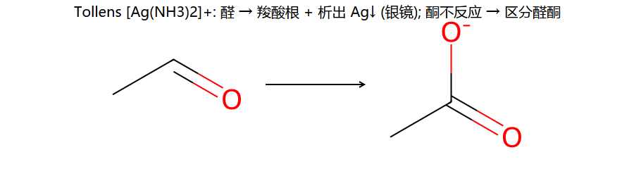
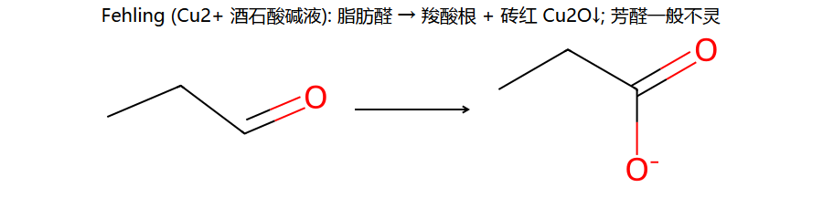
| 试剂 | 现象 | 选择性 |
|---|
| Tollens [Ag(NH₃)₂]⁺（银氨溶液） | 银镜（析出 Ag） | 脂肪醛、芳醛都灵；酮不反应 |
| Fehling（Cu²⁺ 酒石酸碱液） | 砖红 Cu₂O↓ | 只对脂肪醛；芳醛（如苯甲醛）一般阴性 |
醛 → 羧酸（被氧化），金属离子被还原（Ag⁺→Ag、Cu²⁺→Cu₂O）。
Tollens vs Fehling 的差别 = 区分脂肪醛/芳醛：两者都验醛，但 Fehling 对芳醛不灵。所以苯甲醛：Tollens 阳性、Fehling 阴性。
④ Cannizzaro 反应 — 无 α-H 醛的歧化
机理 2 步（歧化：一半氧化、一半还原）
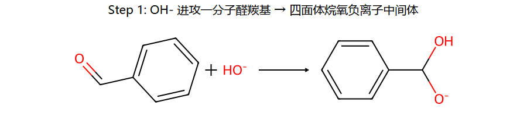
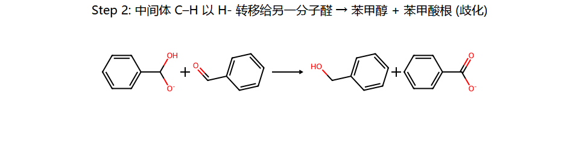
条件（缺一不可）：① 醛无 α-H；② 浓强碱。
- OH⁻ 进攻一分子醛羰基 → 四面体烷氧负离子中间体。
- 该中间体的 C–H 以 H⁻ 转移到另一分子醛的羰基碳上 → 给出 H⁻ 的被氧化成羧酸根，接受 H⁻ 的被还原成醇（歧化）。
为什么必须无 α-H：有 α-H 时碱会优先拔 α-H 走羟醛缩合（快得多）。只有不能做羟醛的醛（HCHO/PhCHO/三甲基乙醛）才"退而求其次"走 Cannizzaro。判断第一件事永远是数 α-H。
例：苯甲醛 + 浓 NaOH/Δ → 苯甲醇 + 苯甲酸钠（理想各 50%）。
交叉 Cannizzaro：常用 HCHO 当还原剂（HCHO 给 H⁻ 倾向最强 → 被氧化成甲酸盐，另一无 α-H 醛被定向还原成醇），产物干净。
11.6 鉴别方法
醛酮专属鉴别试剂
| 试剂 | 用来鉴别 | 阳性现象 |
|---|
| 2,4-DNP（2,4-二硝基苯肼） | 有没有羰基（醛+酮总开关） | 黄 / 橙红色沉淀 |
| Tollens（银氨） | 醛 vs 酮 | 醛出银镜；酮无反应 |
| Fehling（Cu²⁺碱液） | 脂肪醛 vs 芳醛 | 脂肪醛砖红 Cu₂O↓；芳醛阴性 |
| NaHSO₃（饱和） | 醛 / 甲基酮（位阻小） | 白色结晶加成物析出 |
| 碘仿 I₂/NaOH | 甲基酮 / 乙醛 / 乙醇 / 2-醇 | 黄色 CHI₃↓（特殊气味） |
实战 — 鉴别 丙醛 / 丙酮 / 苯甲醛 / 苯乙酮
方案
第一步 — 2,4-DNP：四个都显黄/橙红（都含羰基）→ 确认都是醛酮，但不能彼此区分。
第二步 — Tollens（银镜）：只有丙醛、苯甲醛出银镜（醛）；丙酮、苯乙酮无（酮）。先把醛/酮两类分开。
第三步 — 碘仿（对剩下需细分的）：
- 丙酮 CH₃COCH₃（甲基酮）→ 黄沉；苯乙酮 CH₃COPh（甲基酮）→ 黄沉；要区分这两个酮，可用 Fehling 无效（都阴），改看其它（如 NaHSO₃ 对苯乙酮位阻大不灵、对丙酮灵）。
- 两个醛里：丙醛（脂肪醛）→ Fehling 砖红；苯甲醛（芳醛）→ Fehling 阴性。这样丙醛/苯甲醛也分开了。
总结路线：2,4-DNP 确认羰基 → Tollens 分醛酮 → 碘仿 / Fehling / NaHSO₃ 细分。
跨章联动：把 ch11 的醛酮鉴别和 ch10 的 FeCl₃（酚）、Lucas（醇级）、HIO₄（邻二醇）拼在一起，就能鉴别期末范围里几乎所有含氧化合物。
合成应用
醛酮在合成里的"七种武器"
| 目标 | 用醛酮的反应 | 要点 |
|---|
| 增碳成醇 | RMgX + 醛/酮 → 2°/3° 醇 | 在 C–OH 处断键逆推 |
| 增 1 C 成酸 | HCN 加成 → 氰醇 → 水解 → α-羟基酸 | –CN 水解 |
| 造 C=C（定向） | Wittig | 双键位置确定、不重排 |
| 延长碳链 + 共轭烯酮 | 羟醛缩合（浓碱） | α,β-不饱和醛酮 |
| 羰基 → CH₂（接直链烷基） | F-C 酰化 → Clemmensen/W-K | 避开 F-C 烷基化重排 |
| 给酮 α-位接基团 | Stork 烯胺 / Mannich | 温和、单取代 |
| 保护羰基 | 缩醛（乙二醇）→ 做完别处 → 稀酸脱保护 | 碱/还原条件下惰性 |
合成例 — 由苯 + C₂ 单元合成 正丙苯 (PhCH₂CH₂CH₃)
展开
错误想法：苯 + 1-氯丙烷 / AlCl₃（F-C 烷基化）→ 由于 1° 碳正离子重排成 2°，主产物是异丙苯，得不到正丙苯。
正确路线（醛酮救场）：
- 苯 + 丙酰氯 CH₃CH₂COCl / AlCl₃ →（F-C 酰化，酰基阳离子共振稳定不重排）→ 苯丙酮 PhCOCH₂CH₃。
- 苯丙酮 ──Clemmensen（Zn-Hg/HCl）或 Wolff-Kishner──► C=O → CH₂ → 正丙苯 PhCH₂CH₂CH₃ ✓。
核心：要在苯环上接无重排的直链烷基，走"酰化 → 还原羰基"两步，绕开 F-C 烷基化的碳正离子重排。
合成例 — 用羟醛缩合造 α,β-不饱和醛
展开
目标：2-乙基-2-己烯醛（己醛自身羟醛缩合的脱水产物）。
- 2 分子己醛 CH₃(CH₂)₄CHO，稀 NaOH → β-羟基醛（一分子的 α-碳进攻另一分子羰基）。
- 浓碱 / 加热脱水 → 2-乙基-2-己烯醛（α,β-不饱和醛）。
双键在 α,β 之间、与 CHO 共轭。这是"自身羟醛"——若用两种不同的醛要小心交叉产物（见 11.4②）。
📝 自检 8 题（先想答案再展开）
每道题先关掉答案自己想 30 秒，再点击展开。这 8 题覆盖本章所有高频考点。
自检 1：甲醛、乙醛、丙酮三者与 HCN 加成，谁最快？为什么？
展开答案
甲醛最快。亲核加成活性 HCHO > RCHO > R₂CO。烷基既+I 喂电子（中和羰基碳 δ⁺）又位阻挡路，两效应一致 → 烷基越多越慢。甲醛 0 烷基最活泼，丙酮 2 烷基最钝。
→ 详见 11.2
自检 2：苯甲醛 + 浓 NaOH 给什么？乙醛 + 稀 NaOH 给什么？为什么不同？
展开答案
苯甲醛（无 α-H）→ Cannizzaro：歧化为苯甲醇 + 苯甲酸钠。
乙醛（有 α-H）→ 羟醛缩合：稀碱低温得3-羟基丁醛（浓碱加热再脱水得 2-丁烯醛）。
分水岭就是 α-H：有 α-H → 碱优先拔它走羟醛（快）；无 α-H 才走 Cannizzaro。判断第一步永远是数 α-H。
→ 详见 11.4① + 11.5④
自检 3：下列哪些给碘仿（黄沉）？乙醇 / 甲醇 / 丙酮 / 苯乙酮 / 戊-3-酮 / 异丙醇？
展开答案
阳性（黄沉）：乙醇 CH₃CH₂OH、丙酮 CH₃COCH₃、苯乙酮 CH₃COPh、异丙醇 CH₃CH(OH)CH₃。
阴性：甲醇（无 CH₃CO/CH₃CHOH 结构）、戊-3-酮 CH₃CH₂COCH₂CH₃（不是甲基酮，羰基两边都是乙基）。
判据：含 CH₃CO–（甲基直接连羰基）或能被氧化成它的 CH₃CH(OH)–（乙醇、2-醇）才阳性。
→ 详见 11.4③
自检 4：分子里同时有酮和酯，只想还原酮、保留酯，用什么试剂？反过来想都还原成醇呢？
展开答案
只还酮、保留酯 → NaBH₄（温和，不动 –COOR、–COOH、C=C）。
酮和酯都还原成醇 → LiAlH₄（强，连酸/酯/酰胺/腈一起还）。
若还想保留 C=C 只还羰基 → 仍用 NaBH₄（别用 H₂/Ni，会把双键也加氢）。
→ 详见 11.5①
自检 5：要在苯环上接一条
正丙基（–CH₂CH₂CH₃），为什么不能直接 F-C 烷基化？正确怎么做？
展开答案
直接 F-C 烷基化（苯 + 1-氯丙烷/AlCl₃）→ 1° 碳正离子重排成 2° → 主产物是异丙苯，拿不到正丙苯。
正确：F-C 酰化 → 还原羰基：① 苯 + 丙酰氯/AlCl₃ → 苯丙酮（酰基阳离子不重排）；② Clemmensen 或 Wolff-Kishner 把 C=O → CH₂ → 正丙苯。
→ 详见 11.5② + 合成应用
自检 6：Wittig 反应造苯乙烯需要哪两个原料？产物副产物是什么？为什么爱用 Wittig？
展开答案
原料：苯甲醛 PhCHO + 叶立德 Ph₃P=CH₂。产物：苯乙烯 PhCH=CH₂；副产物：三苯氧膦 Ph₃P=O（P–O 强键形成是驱动力）。
优点：双键位置完全确定（就在原羰基碳上），不像醇脱水会给混合烯、也不重排。是定向造 C=C 的标准法。
→ 详见 11.3⑤
自检 7：缩醛是什么？为什么能当"保护基"？怎么脱保护？
展开答案
缩醛 = 同一碳上挂两个 OR（醛/酮 + 2 ROH / 干 HCl，常用乙二醇成环状缩醛）。
当保护基：缩醛在碱 / 亲核试剂 / 还原剂条件下惰性 → 把怕被这些条件破坏的羰基先变成缩醛藏起来，做完别处反应再放出来。
脱保护：稀酸 + 大量水，水解还原回羰基（全程可逆，靠"水位"控制方向）。
→ 详见 11.3④
自检 8：交叉羟醛里，给苯甲醛 + 丙酮 / 浓碱，主产物是什么？谁当亲核体、谁当亲电体？
展开答案
苯甲醛无 α-H → 只当亲电体（羰基挨打）；丙酮有 α-H → 供烯醇负离子（α-碳当亲核体）。
丙酮 α-碳进攻苯甲醛羰基 → β-羟基酮 → 浓碱脱水 → 苯亚甲基丙酮 PhCH=CH–CO–CH₃（α,β-不饱和酮，与羰基共轭）。
口诀：没 α-H 的挨打，有 α-H 的出拳。
→ 详见 11.4②
考前提醒
判断羟醛 vs Cannizzaro 第一步永远是"数 α-H"：有 α-H → 羟醛缩合（稀碱→β-羟基、浓碱→脱水共轭烯酮）；无 α-H + 浓强碱 → Cannizzaro 歧化（醇 + 羧酸盐）。
亲核加成活性 HCHO > RCHO > R₂CO：烷基既挡路（位阻）又喂电子（+I），方向一致，越多越钝。决定所有亲核加成的难易 + 谁能做 NaHSO₃ 加成。
碘仿黄沉只认 CH₃CO– / CH₃CH(OH)–：甲基酮、乙醛、乙醇、2-醇阳性；甲醇、其它伯醇、非甲基酮阴性。
NaBH₄ 温和（只还醛酮），LiAlH₄ 强（连酸酯一起还）。选择性还原酮而保留酯/双键 → NaBH₄；要还原酸/酯 → LiAlH₄（无水醚）。
C=O → CH₂ 两法：Clemmensen（Zn-Hg/HCl，耐酸）vs Wolff-Kishner（NH₂NH₂/KOH/Δ，耐碱）。配 F-C 酰化可在苯环上安全接不重排的直链烷基。
Wittig 定向造 C=C：叶立德 + 醛酮 → 烯 + Ph₃P=O，双键位置确定、不重排。
缩醛 = 羰基保护基：碱/还原条件下惰性，稀酸 + 水可定量脱保护回羰基。合成多步题里常用乙二醇成环状缩醛保护羰基。
鉴别套路：2,4-DNP 验羰基（醛酮总开关）→ Tollens 银镜分醛酮 → 碘仿验甲基酮 / Fehling 分脂肪醛芳醛 / NaHSO₃ 分位阻。拼上 ch10 的 FeCl₃ / Lucas / HIO₄ 即可鉴别期末范围所有含氧物。
Grignard 遇活泼 H 自杀失活（–OH/–NH/–COOH/端炔）。底物含这些基团时先保护。Grignard + 甲醛→1°醇、+ 其它醛→2°醇、+ 酮→3°醇。